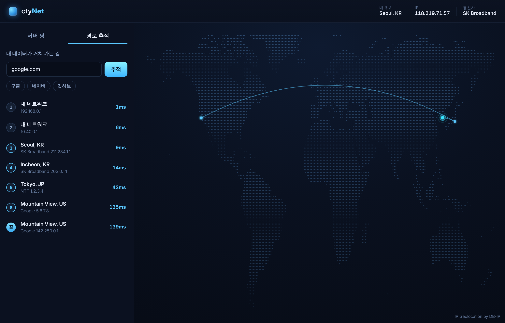

복잡한 설정 없이, 켜면 바로 보입니다
네이버, 구글, 게임 서버 같은 주요 서버까지의 응답 속도를 재서 지도 위에 색으로 보여 줍니다. 초록은 빠름, 노랑은 보통, 빨강은 느림입니다.
내가 어떤 주소에 접속할 때, 데이터가 한 번에 가지 않고 여러 나라의 중간 지점을 거쳐 갑니다. 그 경로를 지도 위에 선으로 그려 줍니다.

내려받고, 실행하면 끝입니다
아래 버튼으로 프로그램 파일을 내려받으세요. 엣지에서 경고가 나오면 유지를 누르면 됩니다.
받은 파일을 더블클릭하세요. 처음에는 윈도우 보호 창이 나올 수 있는데, 추가 정보를 누른 뒤 실행을 누르면 됩니다.
잠시 뒤 지도 화면이 열리고, 주요 서버까지의 응답 속도가 자동으로 표시됩니다.
무료 · 윈도우 10 · 11 · 설치 과정 없는 단일 실행 파일
더 많은 내용은 자주 묻는 질문에서 확인하세요
네, 설치비와 사용료가 없습니다. 회원가입도 필요 없습니다.
아닙니다. IP를 숨기거나 우회하지 않습니다. 내 연결 상태를 보여 주는 진단 도구입니다.
측정은 내 컴퓨터 안에서 이루어지며, 측정 기록을 서버로 보내지 않습니다.